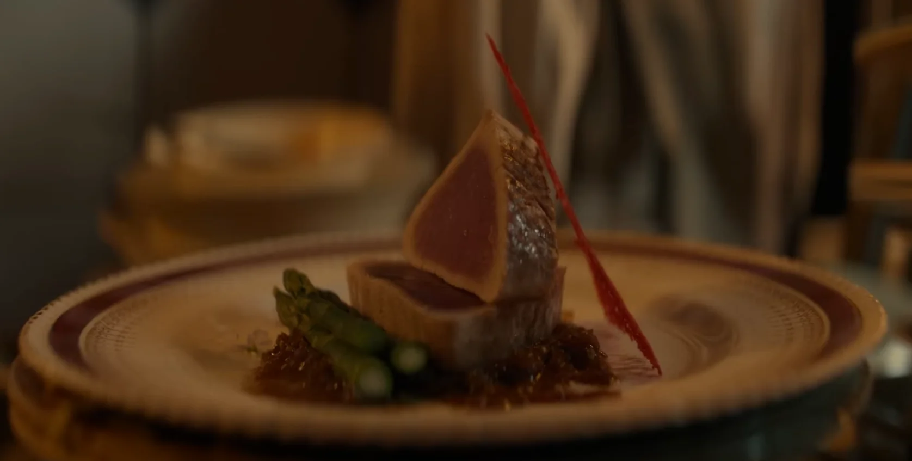

True Blue Fin Saute

Elephant and Pacific Blue Fin Tuna Sauté
One of Chef Sanji's signature dishes. A elegant dish which he crafted
during his time at the Baratie. Although Chef Zeff
pretended
he did not approve, in secret he was elated at the progress and skills of
his young apprentice.
"The All Blue is Real!"
Ingredients
Serves 4
- 4 pieces (300g) blue fin tuna
- dash salt
- dash white pepper
- 1 tbsp olive oil
Sauce
- ½ (100g) onion
- 2 tbsp olive oil
- ½ - 1 tsp grated garlic
- 2 tbsp water
- 2 tsp honey
- 2/3 tsp salt
- 1 tsp soy sauce
- 3 tbsp roasted white sesame
Directions
-
Season tuna with salt and white pepper. Finely slice the onion for the
sauce. Put olive oil in a heated frying pan and cook both sides of the
tuna and take out of the pan.
-
Make the sauce. Place olive oil in the frying pan used to cook the tuna.
Add the onion and stir fry until transparent. Then add garlic, water,
honey, salt, white pepper and white sesame.
- Plate fish and top with sauce.